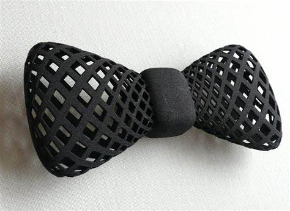

Class 5: Programmable Electronics
For this assignment, we were to program a microcontroller, find a tutorial for Fursion360, and create a simple 3D, and think about our final project and any additional components we'll need in preparation. In Lab, I followed along as we created a sketch in TinkerCAD to produce a button output. For one of my final project elements, I am attempting to sketch a bowtie in Rhino, and in our Fabrication Lab, we have been working on tutorials for an introduction to this software.

And here is a link.
I found this video of 3d print spiral earrings:
